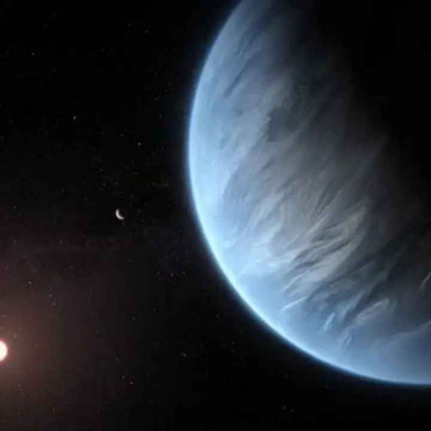

K2-18 b — Exoplaneta

Introdução e História
K2-18 b é um exoplaneta que orbita a estrela anã vermelha K2-18, localizada a cerca de 124 anos-luz da Terra na constelação de Leão. Ele foi descoberto pela missão estendida K2 do Telescópio Espacial Kepler por meio do método de trânsito.
Esse exoplaneta chamou atenção porque está localizado dentro da chamada “zona habitável” da sua estrela — a região em que, em teoria, água líquida poderia existir sob condições favoráveis.
Características Físicas: Massa, Raio e Órbita
K2-18 b é um planeta classificado como sub-Neptuno, com cerca de 2,6 vezes o raio da Terra e uma massa estimada em torno de 8,6 vezes a massa da Terra, indicando uma composição que pode incluir um grande envelope de gases e possivelmente água profunda.
Ele completa uma volta ao redor de sua estrela a cada aproximadamente 33 dias terrestres e está firmemente situado na zona habitável do sistema, onde a energia estelar recebida é comparável à da Terra, mas sob uma estrela muito mais fria.
Potencial de Habitabilidade
- Água e Atmosfera: Observações confirmaram a presença de vapor d’água na atmosfera de K2-18 b, um achado raro para exoplanetas nessa faixa.
- Moléculas na Atmosfera: Telescópios espaciais como o James Webb detectaram metano e dióxido de carbono na atmosfera, e há indícios de possíveis moléculas complexas — sugerindo um ambiente com possibilidade de oceanos sob uma atmosfera rica em hidrogênio.
- Habitabilidade Real: Apesar dessas descobertas, ainda não há evidência direta de vida; algumas interpretações sugerem que os sinais podem vir de processo não biológicos e a atmosfera densa pode ser dominada por hidrogênio.
K2-18 b é um dos exoplanetas mais estudados quando se fala em ambientes potencialmente favoráveis à vida fora do Sistema Solar, mas sua verdadeira habitabilidade ainda é incerta e requer observações adicionais.
Curiosidades
K2-18 b foi um dos primeiros exoplanetas a ter vapor d’água detectado em sua atmosfera, um marco na pesquisa de atmosferas extrassolares.
Alguns estudos consideram K2-18 b um exemplo de “mundo Hycean”, um planeta com oceanos sob uma atmosfera rica em hidrogênio — um tipo de mundo que pode ser especialmente promissor para busca de vida.
Apesar de sua massa e tamanho maiores que os da Terra, excêntricos compostos atmosféricos tornam esse planeta um laboratório natural para entender a diversidade de exoplanetas.
Origem do Nome
O nome “K2-18 b” segue a convenção astronômica padrão: o catálogo da estrela hospedeira (K2-18) seguido de uma letra (“b”) que indica o primeiro planeta descoberto nesse sistema estelar. Não há mitologia associada nesse caso, pois é uma nomenclatura científica.
Referências
- Wikipedia. K2-18 b. Disponível em: https://pt.wikipedia.org/wiki/K2-18b. Acesso em: 26 dez. 2025.
- NASA. Webb discovers methane and carbon dioxide in atmosphere of K2-18 b. Disponível em: https://science.nasa.gov/missions/webb/webb-discovers-methane-carbon-dioxide-in-atmosphere-of-k2-18-b. Acesso em: 26 dez. 2025.